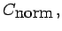
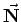
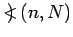
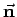
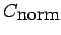
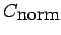
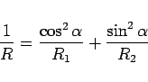

Inhalt Index DeskTop Bronstein

 Geometrie Differentialgeometrie Flächen Krümmung einer Fläche
Geometrie Differentialgeometrie Flächen Krümmung einer Fläche


Wenn durch einen Flächenpunkt P verschiedene Kurven  auf dieser Fläche gezogen werden, dann stehen ihre Krümmungskreisradien
auf dieser Fläche gezogen werden, dann stehen ihre Krümmungskreisradien  im Punkt P in den folgenden drei Beziehungen zueinander (s. die folgenden Abbildungen):
im Punkt P in den folgenden drei Beziehungen zueinander (s. die folgenden Abbildungen):
Dabei ist R der Krümmungskreisradius des Normalschnittes  der durch die gleiche Tangente NQ geht wie C sowie durch den Einheitsvektor  der Flächennormalen;  ist der Winkel zwischen dem Einheitsvektor  der Hauptnormalen der Kurve C und dem Einheitsvektor der Flächennormalen. Das Vorzeichen von  in (3.529) ist positiv, wenn auf der konkaven Seite der Kurve  liegt und negativ im umgekehrten Falle.
in (3.529) ist positiv, wenn auf der konkaven Seite der Kurve  liegt und negativ im umgekehrten Falle.
|  | (3.530) |
berechnet werden, wobei R1 und R2 die Hauptkrümmungskreisradien sind, und  ist der Winkel zwischen den Ebenen der Schnitte C und C1 (untere Abbildung).
ist der Winkel zwischen den Ebenen der Schnitte C und C1 (untere Abbildung).